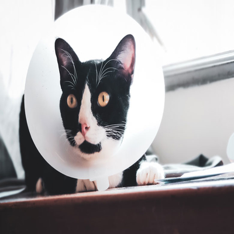
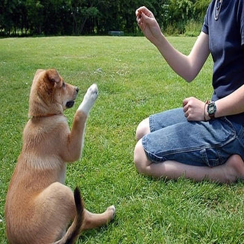

En el albergue Mejor Amigo contamos con diferentes servicios para sus peludos amigos
Servicios Veterinarios
Contamos con profesionales capaces de valorar a su mascota de manera integral, tomando en cuenta la historia clínica,
los síntomas que presente y las alteraciones clínicas (o hallazgos clínicos) encontradas durante la revisión general.
Basados en su conocimiento le guiarán en la elección de exámenes diagnósticos necesarios
para el correcto diagnóstico y tratamiento de su mascota. Estos servicios se brindan tanto para mascotas así como para
animales rescatados de las calles.
Contamos con especialidades como:
| Medicina Interna |
Cirugia |
Castraciones |
|
 |
 |
| Limpieza Dental |
Laboratorio |
Vacunacion |
|
|
|
Servicio de Grooming
La importancia del higiene y cuidado estético de las mascotas representa una de las principales preocupaciones de los dueños de mascotas.
Es por eso que en el albergue ofrecemos una de las mejores experiencias para asegurarle que su peludo amigo
cuente con el mejor trato al momento de cuidar su apariencia.
Contamos con personal altamente capacitado que aplica las mejores técnicas de peluquería canina y felina y en conjunto
con la utilización de los mejores productos del mercado se busca garantizar un servicio de calidad a su mascota.
El servicio se ofrece tanto para perros como para gatos.
Se llevan a cabo tareas de grooming como:
| Peinado, limpieza, corte y cepillado de pelo |
Corte de uñas |
Limpieza del canal auditivo |
|
|
|
Adiestramiento Canino
Nuestro programa de adiestramiento canino le permite al dueño y a su mascota aprender a compartir
de forma alegre y efectiva, enseñándole además las normas de conducta en un ambiente controlado.
Nuestro método recoge lo mejor de cada una de las actuales técnicas de adiestramiento en positivo
y terapias de modificación de conducta.
El programa incluye:
| Técnicas de Adiestramiento con Refuerzo Positivo. |
Tratamiento problemas de conducta |
Seguimiento conductual gratuito |
|  |
|
|